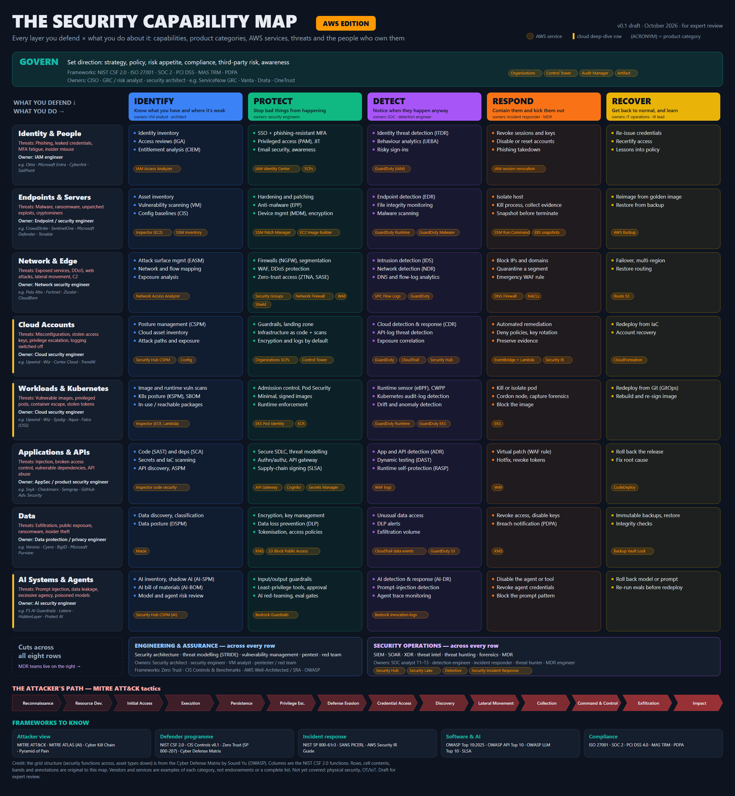
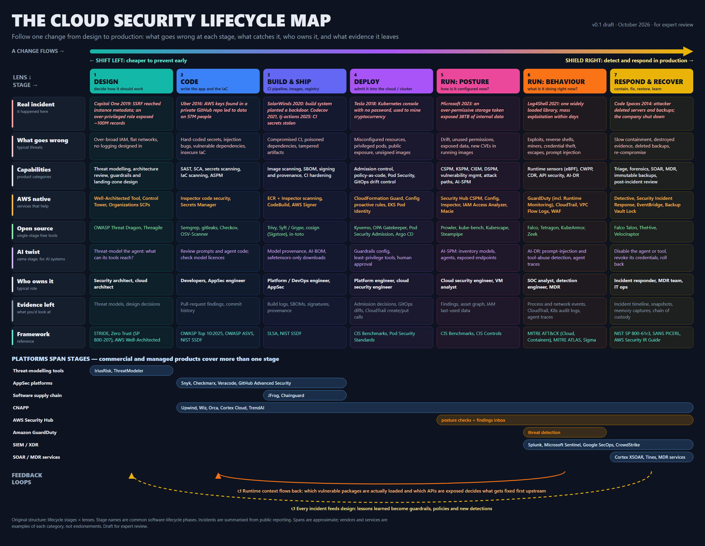

The whole of cybersecurity on a few pages: core ideas, the layers you defend, the domains and teams, the frameworks people actually use, the threats, and where AWS services and third-party products fit. Written by a platform architect learning security, October 2026.
← Field Guides · Vendor names are examples of each category, not endorsements or a complete market list.


A suggested order if you are coming from cloud, platform or infrastructure work:
Sections 1–3. Be able to place any product or AWS service on the layer map and name its category.
Sections 4–5. NIST CSF 2.0 and MITRE ATT&CK first; they're the two everyone references.
Sections 7–9. Walk the worked attack until you can tell it aloud: what happened, what fired, what you'd do.
Section 12 labs. Real practice beats memorised acronyms.
Confidentiality (only the right people see it), Integrity (it isn't tampered with), Availability (it works when needed). Every control protects at least one. Ransomware hits A and often C.
Asset: what you protect. Threat: who or what could harm it. Vulnerability: the weakness. Exploit: how the weakness is used. Risk ≈ likelihood × impact.
Authentication (who are you), Authorization (what may you do), Accounting (what did you do: logs). Most cloud breaches are an AAA failure.
Grant only what a task needs, for only as long as it's needed (just-in-time access). Limits blast radius when, not if, something is compromised.
Layers of independent controls so one failure isn't a breach. Section 2 is built on this idea.
No implicit trust from network location. Verify identity, device and context on every request (NIST SP 800-207). Workload identity (SPIFFE) with default-deny policies is zero trust applied to services and AI agents.
Prevention always fails eventually, so you also need detection (to know) and response (to limit damage). An MDR team lives in detect and respond.
Design and monitor as if an attacker is already inside. Drives segmentation, logging and rehearsed incident response.
Read top (outermost) to bottom (the data you ultimately protect). Governance wraps everything; monitoring and response cut across every layer.
AWS service Third-party example
Job titles and org charts follow these domains.
| Domain | Purpose | Typical roles | Product categories |
|---|---|---|---|
| Governance, Risk & Compliance | Policies, risk register, audits, regulatory compliance | GRC analyst, CISO office, auditor | GRC platforms, compliance automation |
| Security architecture & engineering | Design controls into systems | Security architect, security engineer | Everything, as designs |
| Identity & access management | Who gets access to what, and proving it | IAM engineer | IdP, PAM, IGA, CIEM |
| Network security | Segmentation, perimeter, secure remote access | Network security engineer | NGFW, SASE/SSE, ZTNA, NDR, WAF |
| Endpoint security | Laptops and servers | Endpoint engineer | EPP, EDR, MDM |
| Cloud security | Posture and runtime for cloud and Kubernetes | Cloud security engineer | CNAPP (CSPM, CWPP, CIEM, CDR) |
| Application security | Secure software from code to production | AppSec / product security engineer | SAST, SCA, DAST, ASPM, API security |
| Data security & privacy | Find, classify and protect sensitive data | Data protection officer, privacy engineer | DSPM, DLP, encryption, tokenisation |
| Security operations (SecOps / SOC) | Monitor, detect, triage, respond | SOC analyst T1–T3, detection engineer, incident responder, threat hunter | SIEM, SOAR, XDR, TI |
| Threat intelligence | Know adversaries and their TTPs | CTI analyst | TI platforms and feeds |
| Offensive security | Find weaknesses before attackers do | Pentester, red team, bug bounty | Scanners, BAS, ASM |
| Vulnerability management | Find, rank and drive fixes | VM analyst | Scanners, VM/RBVM platforms |
| OT / IoT security | Industrial and device networks | OT security engineer | OT NDR, asset discovery |
| AI security | Secure AI systems; use AI in defence | AI security engineer, AI red team | AI-SPM, AI-DR, guardrails, AI red-teaming |
Titles vary by company; this follows common industry usage and lines up roughly with ENISA's 12 ECSF role profiles and the US NICE Framework.
| Role | Main question they own | Domains | Frameworks they reach for | Tools they live in | Layers (section 2) |
|---|---|---|---|---|---|
| CISO | Are we managing cyber risk to an acceptable level, and can we prove it? | GRC, all | NIST CSF, ISO 27001, MAS TRM, risk registers | GRC platform, board dashboards | Governance (all) |
| Security architect | Is security designed in, and do the controls fit together? | Architecture, cloud, IAM, network | Zero Trust, AWS SRA / Well-Architected, STRIDE, CIS Benchmarks | Design docs, IaC, CSPM findings | All, by design |
| GRC / risk analyst | Do we meet our obligations? | GRC | ISO 27001, SOC 2, PCI DSS, MAS TRM, PDPA | GRC platform, Audit Manager, Config | Governance |
| Cloud security engineer | Is the cloud estate configured and running safely? | Cloud, IAM, containers | CIS Benchmarks, AWS SRA, CKS topics | CNAPP (e.g. Upwind, Wiz), Security Hub, GuardDuty, Kyverno | Network → data |
| IAM engineer | Does everyone and everything have exactly the access it needs? | IAM | Zero Trust, least privilege | Okta/Entra, CyberArk, SailPoint, IAM Access Analyzer | Identity |
| Network security engineer | Can traffic only go where it should? | Network | Zero Trust, CIS | NGFW, SASE, WAF, Network Firewall | Edge, network |
| AppSec / product security engineer | Is the software we ship secure? | AppSec, supply chain | OWASP Top 10 / API / ASVS, SLSA, SSDF | Snyk, Semgrep, GitHub Advanced Security, CNAPP code scanning | Application, containers |
| Vulnerability management analyst | Which weaknesses do we fix first? | Vuln mgmt | CVSS, EPSS, KEV, SSVC | Tenable, Qualys, Inspector, CNAPP vulnerability views | Host, containers, app |
| SOC analyst (Tier 1–2) | Is this alert real, and how bad is it? | SecOps | MITRE ATT&CK, playbooks | SIEM, XDR, CNAPP / CDR consoles | Detect & respond |
| Incident responder (Tier 3 / IR) | What happened, how far did it go, and how do we stop it? | SecOps, forensics | NIST 800-61, PICERL, ATT&CK | SIEM, EDR/CDR, forensic tooling, CloudTrail | Detect & respond |
| Detection engineer | Do our detections catch real attacks without drowning us? | SecOps | ATT&CK, Sigma, Pyramid of Pain | SIEM rules, Falco/sensor rules, test harnesses | Detect |
| Threat hunter / CTI analyst | Who is targeting us, and are they already here? | Threat intel, SecOps | ATT&CK, Diamond Model | TI platforms, SIEM queries | Detect |
| Penetration tester / red team | Can we actually be broken into? | Offensive | ATT&CK, OWASP testing guides | Burp, Metasploit, cloud attack tools, BAS | All, from outside |
| AI security engineer | Are our models and agents safe to run, and safe from misuse? | AI security | OWASP LLM Top 10, MITRE ATLAS, NIST AI RMF | Guardrails, AI red-team tools, AI-SPM | AI systems |
| MDR security engineer | For many customers at once: what's happening, what matters, what should they do? | SecOps + cloud | ATT&CK, NIST 800-61, AWS IR guide | The provider's CNAPP / CDR platform, customer's cloud logs | Detect & respond, across all layers |
The CISSP exam's 8 domains are a common vocabulary: (1) Security & Risk Management, (2) Asset Security, (3) Security Architecture & Engineering, (4) Communication & Network Security, (5) Identity & Access Management, (6) Security Assessment & Testing, (7) Security Operations, (8) Software Development Security. ISC2's CCSP covers the cloud slice of these.
NIST Cybersecurity Framework 2.0 (2024) has six functions. It's the most common way to present a security programme to executives, and every product can be placed in one or more functions.
| Function | Key activities | AWS services | Product categories |
|---|---|---|---|
| Govern | Policy, roles, risk strategy, supplier risk | Organizations, Control Tower, Audit Manager, Artifact | GRC, TPRM |
| Identify | Asset inventory, risk assessment, vulnerability discovery | Config, Resource Explorer, Inspector, Security Hub CSPM, Macie, Access Analyzer | CSPM, ASM, VM, DSPM, CIEM |
| Protect | Access control, encryption, hardening, training, secure SDLC | IAM, KMS, WAF, Shield, Network Firewall, Secrets Manager, SSM | IdP, PAM, NGFW, WAF, EPP, SAST/SCA, admission control |
| Detect | Continuous monitoring, anomaly detection, alert analysis | GuardDuty, CloudTrail, Security Hub, Security Lake, Detective | SIEM, EDR/XDR, CDR, NDR, UEBA |
| Respond | Triage, containment, eradication, communication, analysis | EventBridge + Lambda/SSM automation, Security Incident Response, Detective | SOAR, IR retainers, MDR |
| Recover | Restore, validate, improve | AWS Backup, Elastic Disaster Recovery | Backup, DR |
Stars = how often it comes up in cloud security and detection work. You don't need to memorise them; you need to know what each is for and use the right one in conversation.
| Framework | Type | What it gives you | Use it when | Priority |
|---|---|---|---|---|
| Attacker and detection | ||||
| MITRE ATT&CK | Knowledge base | 14 tactics (the "why") and hundreds of techniques (the "how"), with Enterprise, Cloud and Containers matrices | Describing an attack, mapping detection coverage, writing reports | ★★★ |
| Cyber Kill Chain (Lockheed Martin) | Attack model | 7 stages: recon → weaponise → deliver → exploit → install → C2 → actions | Explaining "break the chain early" to non-specialists | ★★ |
| Pyramid of Pain | Detection model | Hashes and IPs (trivial for attackers to change) up to TTPs (hard to change) | Arguing for behaviour-based detection over IOC lists | ★★ |
| Diamond Model | Analysis model | Adversary, capability, infrastructure, victim | Threat intel and attribution discussions | ★ |
| Sigma | Detection format | Vendor-neutral detection rules that convert to SIEM queries | Detection-as-code conversations | ★★ |
| Incident response | ||||
| NIST SP 800-61 (Rev. 3) | IR guide | Incident response mapped onto CSF 2.0 functions; the classic lifecycle is prepare → detect & analyse → contain, eradicate & recover → post-incident | Describing how you'd run an incident | ★★★ |
| SANS PICERL | IR lifecycle | Preparation, Identification, Containment, Eradication, Recovery, Lessons learned | Same purpose; many SOCs use this wording | ★★★ |
| AWS Security Incident Response Guide | Cloud IR | Cloud-specific prep, isolation and forensics on AWS | "How would you respond to a leaked access key?" | ★★★ |
| Programme and controls | ||||
| NIST CSF 2.0 | Programme framework | Govern, Identify, Protect, Detect, Respond, Recover (section 4) | Structuring any security conversation | ★★★ |
| CIS Controls v8.1 | Prioritised controls | 18 controls in implementation groups IG1–IG3; a practical "do these first" list | Advising a customer on what to fix first | ★★ |
| CIS Benchmarks | Configuration baselines | Hardening checklists for AWS, Kubernetes, Linux and more | What CSPM/KSPM checks are built from | ★★★ |
| ISO/IEC 27001 / 27002 | Certifiable standard | Information security management system plus control catalogue | Enterprise customers' compliance needs | ★ |
| NIST SP 800-53 | Control catalogue | Large, detailed control set (US federal) | US federal and regulated work | ★ |
| SOC 2 / PCI DSS 4.0 | Audit / industry standard | Service-organisation trust criteria / payment card rules | SaaS customers, fintech and payments customers | ★ |
| Architecture | ||||
| Shared responsibility model | Cloud model | What the provider secures vs. what you secure (section 6) | Every cloud conversation | ★★★ |
| Zero Trust (NIST SP 800-207) | Architecture | Policy decision and enforcement points; never trust by network location | Identity-first design discussions | ★★ |
| AWS Well-Architected Security Pillar / AWS SRA | Cloud reference | Best practices and a reference multi-account security architecture | Proactive reviews of customer AWS environments | ★★★ |
| STRIDE | Threat modelling | Spoofing, Tampering, Repudiation, Information disclosure, Denial of service, Elevation of privilege | Reviewing a design for what could go wrong | ★★ |
| Application and supply chain | ||||
| OWASP Top 10:2025 | Web risks | A01 Broken Access Control, A02 Security Misconfiguration, A03 Software Supply Chain Failures, A04 Cryptographic Failures, A05 Injection, A06 Insecure Design, A07 Authentication Failures, A08 Software or Data Integrity Failures, A09 Security Logging & Alerting Failures, A10 Mishandling of Exceptional Conditions | Any AppSec discussion | ★★ |
| OWASP API Security Top 10 (2023) | API risks | Led by BOLA (broken object-level authorisation) and broken authentication | API security reviews | ★★ |
| SLSA / NIST SSDF (SP 800-218) | Supply chain | Build provenance levels / secure development practices | Supply-chain incident discussions | ★ |
| AI | ||||
| OWASP Top 10 for LLM Applications (2025) | AI risks | Prompt injection, sensitive information disclosure, supply chain, excessive agency, and more | AI security reviews | ★★★ |
| MITRE ATLAS | AI attack knowledge base | ATT&CK-style tactics and techniques for attacks on AI systems | Mapping AI attacks the way ATT&CK maps others | ★★ |
| NIST AI RMF / ISO/IEC 42001 | AI governance | AI risk management framework / certifiable AI management system | Governance-level AI discussions | ★ |
| Singapore context | ||||
| MAS TRM Guidelines | Regulatory (financial) | Technology risk management expectations for financial institutions | Bank and fintech environments | ★★ |
| PDPA | Privacy law | Personal data protection obligations, including breach notification | Incidents involving personal data | ★ |
| CSA Cyber Essentials / Cyber Trust mark; CCoP | National schemes | Cyber Security Agency certification marks; Code of Practice for critical information infrastructure | Local enterprise and CII customers | ★ |
| Actor | Motive | Typical behaviour | Cloud example |
|---|---|---|---|
| Cybercrime / ransomware groups | Money | Initial-access brokers, double extortion (encrypt + leak) | Steal data from S3, delete backups, demand ransom |
| Opportunistic / automated | Money, at scale | Scan the internet and GitHub for exposed keys and services | Leaked access key → cryptominers on large GPU instances within minutes |
| Nation-state (APT) | Espionage, disruption | Patient, stealthy, custom tooling, supply-chain attacks | Abuse identity federation or OAuth apps to read mail and data quietly |
| Insider | Grievance, money, mistake | Legitimate access used wrongly; accidental exposure | Engineer copies production data to a personal bucket |
| Hacktivist | Ideology | DDoS, defacement, leaks | DDoS against a public API |
| Pattern | How it happens | Signals that catch it | Prevention |
|---|---|---|---|
| Credential compromise | Access key in a public repo, phished SSO session, token stolen from a pod or laptop | GuardDuty (unusual API calls, credential use from outside AWS), CloudTrail anomalies, CDR identity alerts | No long-lived keys; SSO + MFA; IMDSv2; secret scanning |
| Misconfiguration exposure | Public bucket, open security group, public snapshot, exposed dashboard | CSPM, Macie, attack-surface scans | Guardrails (SCPs, Block Public Access), IaC scanning |
| Exploiting internet-facing software | Unpatched web app or VPN appliance; injection; deserialisation | WAF logs, runtime sensor (web server spawns a shell), EDR | Patching ranked by exposure, WAF, least-privilege runtime |
| Cryptojacking | Any of the above, then run miners | Runtime (known miner binaries, mining-pool connections), cost anomaly, GuardDuty | Quotas, egress control, runtime blocking |
| Container / K8s compromise | Vulnerable image, privileged pod, exposed dashboard or kubelet, stolen SA token | Runtime sensor (shell, escape attempts, token reads), K8s audit logs | Pod Security restricted, admission control, NetworkPolicy |
| Supply chain | Malicious package, compromised CI action, backdoored upstream | Runtime (unexpected outbound connections from build or app), SCA alerts | Pinning, SBOM, signing, CI egress control, provenance |
| Data exfiltration / ransomware | After access: copy data out, or encrypt/delete it | Unusual data-transfer volume, GetObject spikes, KMS key-policy changes, backup deletion | Encryption with tight key policies, immutable backups, egress limits |
| Defence evasion | Stop CloudTrail, delete logs, disable GuardDuty | Alerts on StopLogging / DeleteTrail, org-level trails | SCPs that forbid disabling security services |
| AI-specific | Prompt injection, data leakage through the model, agent tool abuse | Agent traces (Langfuse), AI-DR, guardrail logs | Least-privilege tools, human approval, input/output guardrails |
A realistic cloud intrusion walked through the 14 ATT&CK tactics. Practise telling this story with "what would fire, and what I'd do".
| # | Tactic | In this story | What could catch it | Your response |
|---|---|---|---|---|
| 1–2 | Recon / Resource development | Attacker scans for exposed services; sets up a C2 server and mining pool account | Mostly invisible to you; threat intel later | — |
| 3 | Initial Access | Exploits an unpatched internet-facing web app running in a pod | WAF logs; a runtime-aware vulnerability tool would have ranked this CVE first (exposed + loaded) | Confirm exploit path from logs |
| 4 | Execution | Web server process spawns sh and runs curl | sh | Runtime sensor: shell spawned by web server, download-and-execute | Triage: is this normal for the app? (usually not) |
| 5 | Persistence | Creates a CronJob / new IAM user with access key | K8s audit log; CloudTrail CreateUser, CreateAccessKey | Inventory everything created after initial access |
| 6 | Privilege Escalation | Pod is privileged; mounts host filesystem | Runtime (container escape indicators); CSPM had flagged the privileged pod | Treat the node as compromised |
| 7 | Defense Evasion | Deletes shell history; tries to stop CloudTrail | Runtime (log tampering); CloudTrail StopLogging alert | Escalate severity; check org-level trail is intact |
| 8 | Credential Access | Reads SA token; queries IMDS for the node role | Runtime (token read, IMDS access); GuardDuty if the credentials are used from outside | Revoke sessions, rotate, block IMDS from pods |
| 9 | Discovery | Lists S3 buckets, IAM roles, secrets | CloudTrail burst of List*/Describe* from a new principal | Scope what the stolen role could reach |
| 10 | Lateral Movement | Assumes a more privileged role; reaches other pods | CloudTrail AssumeRole chain; NetworkPolicy/mesh denies | Contain: deny policies on the roles, isolate pods/nodes |
| 11 | Collection | Copies customer data into staging bucket | Macie/DSPM; S3 data events | Identify exactly which data (needed for PDPA notification) |
| 12 | Command & Control | Outbound beacon to attacker server | Runtime network events, DNS logs, GuardDuty threat intel | Block egress; collect IOCs |
| 13 | Exfiltration | Uploads archive to external storage | Unusual egress volume, flow logs | Stop transfer, preserve evidence |
| 14 | Impact | Launches miners on GPU instances; deletes backups | Cost anomaly, GuardDuty crypto findings, Backup events | Eradicate, recover from immutable backups, post-incident review |
Writing, testing and tuning detection rules as code: version control, test data, false-positive budgets, ATT&CK coverage maps.
Proactively searching for attackers that didn't trigger alerts, starting from a hypothesis ("is anyone using IMDS from pods?").
Per scenario: trigger, questions to answer, evidence to collect, containment options, communication, closure criteria.
MTTD (time to detect), MTTR (time to respond/remediate), false-positive rate, coverage of ATT&CK techniques.
Red attacks, blue defends, purple is both together to test and improve detections.
Tools that safely replay attacker techniques to check detections fire (e.g. Atomic Red Team, Falco event-generator, GuardDuty tester).
Every environment has thousands of CVEs. The skill is choosing the few that matter.
| Signal | What it tells you | Limitation |
|---|---|---|
| CVSS | Severity of the flaw in general (0–10) | Says nothing about your environment or whether anyone exploits it |
| EPSS | Probability of exploitation in the next 30 days | Still not about your environment |
| CISA KEV | Known to be exploited in the wild | Short list; absence doesn't mean safe |
| SSVC | Decision tree: act / attend / track | Needs your context as input |
| Exposure (internet-facing?) | Can an attacker reach it? | Needs network and graph analysis |
| Runtime reachability (in use?) | Is the vulnerable package actually loaded or executed? | Needs a runtime sensor (the pitch of runtime-first CNAPPs) |
| Blast radius | What the workload's identity can reach (data, admin roles) | Needs CIEM |
| Resource | What you practise | Why it helps |
|---|---|---|
| flAWS / flAWS2 (flaws.cloud) | Classic AWS misconfiguration and credential mistakes, from attacker and defender side | Builds the attacker's view of AWS quickly |
| CloudGoat (Rhino Security Labs) | Deliberately vulnerable AWS scenarios deployed with Terraform | Attack chains you can then investigate in CloudTrail |
| Kubernetes Goat | Vulnerable Kubernetes scenarios | Container escape, RBAC abuse, SSRF to metadata |
| AWS incident response playbooks (aws-samples on GitHub) | Ready-made playbooks for compromised credentials, S3 exposure, etc. | A template for writing your own playbooks |
| MITRE ATT&CK Navigator | Map detections and attacks onto the matrix | Show detection coverage visually |
| Atomic Red Team / Falco event-generator | Safely trigger specific techniques | Test that detections actually fire |
| Sigma rules repository | Read hundreds of real detection rules | Fastest way to learn what "good detection logic" looks like |